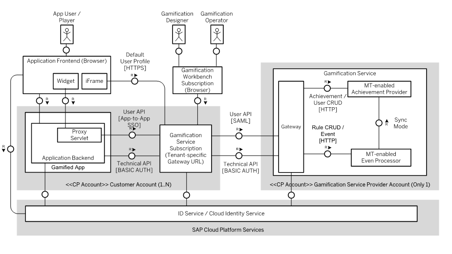

The graphic below illustrates how a gamified application (gamified app) running on SAP Cloud Platform is typically integrated with the gamification service. The demo application "Help Desk" follows this integration architecture:

In a SAP Cloud Platform setting we assume that the gamified app and the gamification service subscription are located in the same account. Furthermore, we assume that the application back end is written in Java, while the application front end is based on HTML5 or SAP UI5.
The technical endpoint is used to send gamification-relevant events and perform user management tasks from the application back end. Communication is based on a BASIC AUTH destination that uses the user name and password of a technical user.
The easiest way to show player achievements is to integrate a default user profile that comes with the gamification service subscription as an iFrame in the application's web front end.
To implement a user profile or single widgets (for example a progress bar tailored to the application's front end), we recommend you use the user endpoint in combination with a local proxy servlet and an app-to-app SSO destination. The proxy servlet prevents running into cross-site scripting issues and the app-to-app SSO destination automatically forwards the credentials of the authenticated user to the gamification service. This allows reuse of the access control mechanisms offered by the gamification service.
Since the user endpoint is used from a browser it is protected against cross-site request forgery. Accordingly, an XSRF token has to be acquired by the client first.